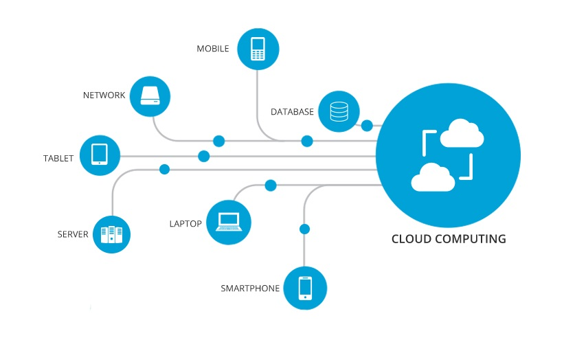
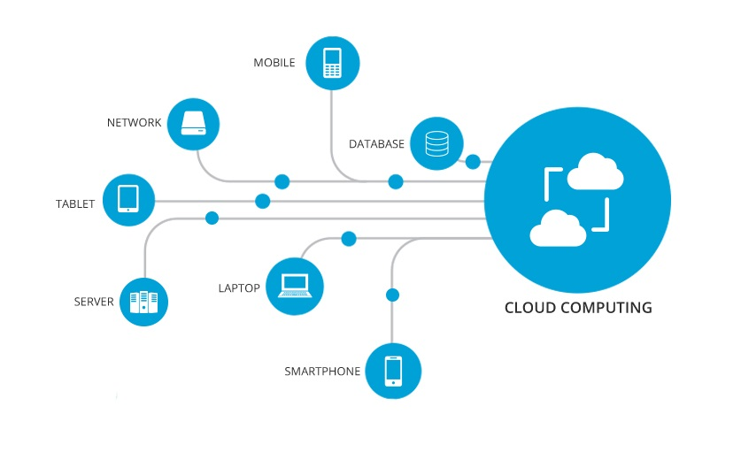

Skytjenester (cloud computing) er en samlebetegnelse
på alt fra dataprosessering og datalagring til programvare
på servere som er tilgjengelig fra eksterne serverparker
tilknyttet internett.
Det er vanlig å dele skytjenester opp i tjenestemodeller.
De tre vanligste er:
Programvare som tjeneste (software as a service - SaaS),
som er en modell for leveranse over et nettverk hvor
kunden benytter leverandørens applikasjon(er) på en
nettsky-infrastruktur. Kunden har i utgangspunktet ikke
kontroll over verken applikasjoner, nettverk, servere,
operativsystemer eller lagringsmuligheter.
Plattform som tjeneste (platform as a service - PaaS),
hvor kunden innfører applikasjoner utviklet/kjøpt av
kunden i leverandørens nettsky-infrastruktur gjennom å
benytte programmeringsspråk og verktøy støttet av
leverandøren. Kunden har kontroll over egne applikasjoner,
men har ikke kontroll over nettverk, servere,
operativsystemer eller lagringsmuligheter.
Infrastruktur som tjeneste (infrastructure as a service - IaaS),
som gjelder levering av datainfrastruktur som en tjeneste
over et nettverk. Kunden har kontroll over relevante applikasjoner,
servere, operativsystemer og lagringsmuligheter, samt i noen
tilfeller visse elementer i nettverket (for eksempel på brannmursiden).

 
